>
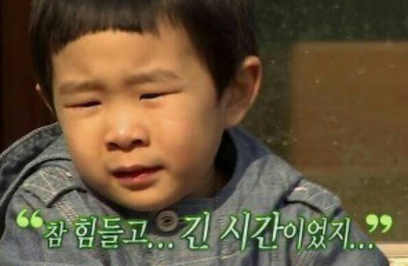
“낼 학교끝나고 놀이동산갈려?”
“... 나 .. 정시특강 …”
나한텐 너무 소중했던 2017년의 이야기
눈물도 웃음도 가장 많이 흘렸던,
또 어느때보다 위로나 격려를 많이 받았던
누구에겐 2017년이 아닐수도 있는
그래도 이걸보는 이들은 짧게라도
“그땐 그랬지 ~ ”
생각해줬으면 좋겠는 그런 이야기
우리라서 공감할수 있는 n년간의 이야기.
지금부터 시작해보려한다.
여차저차 시작하게 된 입시미술.
고등학교 2학년때까지 이해하지 못했다.
같은 봉고에 타는 3학년 언니들이 왜 퉁퉁부은눈으로 집에가는지
가끔은 마지막 봉고시간인 11시차도 타지않는 언니도 있었다.
방학특강을 할때면 막차를 타면서 화통을 매고가는 언니들을 보고는
8시간 뒤에 와서 또 그릴 건데 뭘 저렇게까지..
그저 생색이고 엄살이라 생각했었다.
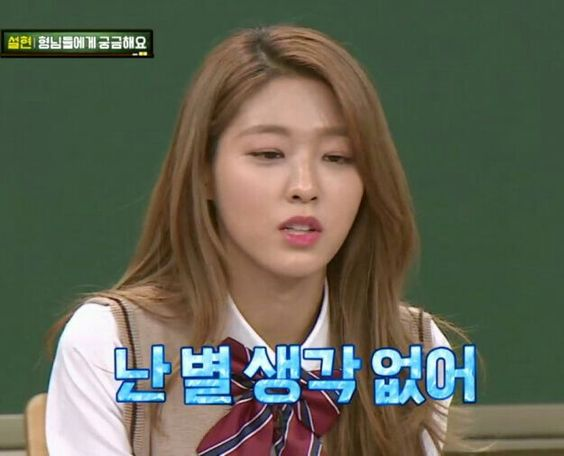
“복현쌤"
그렇게 포항지진으로 일주일 연기된 수능이 끝나고 가족 다음으로 걸려온 전화
“시험 어떻게됬어?”
“쌤 행복은.. 성적순이 아니ㅈ”
“못봤니?”
“쌤 실기 열심히 할ㄱ"
“오늘 저녁에 와라. 가채점하게."
“저 오늘저녁에 약속있ㄴ"
“안오기만해."
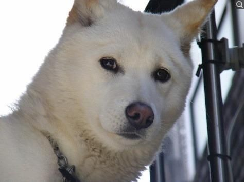
"..."
그날 저녁으로 학원에 갔고 우리반은 다같이모여서 가채점을 했다.
그리고 우리는 서로에게 아무것도 물어보지않았고
복현쌤반 줄여서 복쌤반에서 난 자리를 옮겨야했다.
사실 나뿐만 아니라 다들 그랬다.
잔인하지만 성적에 따라 실기유형이 달랐던 미대입시생들에겐
어쩌면 받아들여야 할수밖에없는 현실이었다.
성적순으로 모여앉은 복쌤반에선 엉엉 울던 친구들도 있었고
바로 붓을 집어들던 친구들도 있었다.
스무살.
성인이되었고 달라지는건 없었다. 크리스마스도, 신정도 우리는 다같이 보냈다.
달라졌던건 크리스마스엔 트리와 장식을 주제로 그림을 그렸고
신정엔 윷놀이를 주제로 그림을 그렸다.
아, 한가지 기억나는건 우리반을 대표로 총대매고 물어본
“쌤, 크리스마스에 학원 나와요?”
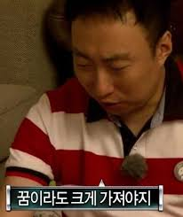
하루에 시험을 두번을 봤고 쌤기분이 좋지않은날엔 세번을 봤다.
그리고 하루에 보는 두번의 시험중 한번은 꼭 혼이 났다.
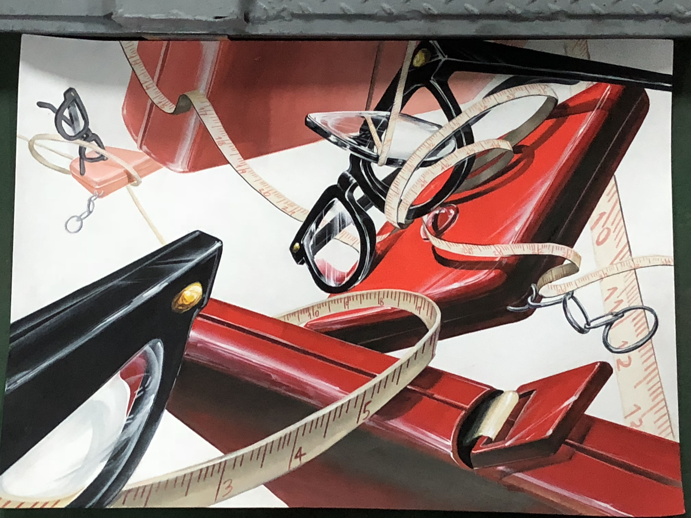
지금보면 또 안맞은게 다행인것 같기두하고..
부모님과 상의후에 적어간 희망학교 세개.
쌤은 아무말도 없이 내 성적표랑 희망원서를 다시 손에 꼬옥 쥐어주셨다.
그렇게 원서를 접수하고 실감이 났다.
실기대회를 하두 보러다녀서 떨지 않을수 있을거란 생각 또한 보기 좋게 빗나갔다.
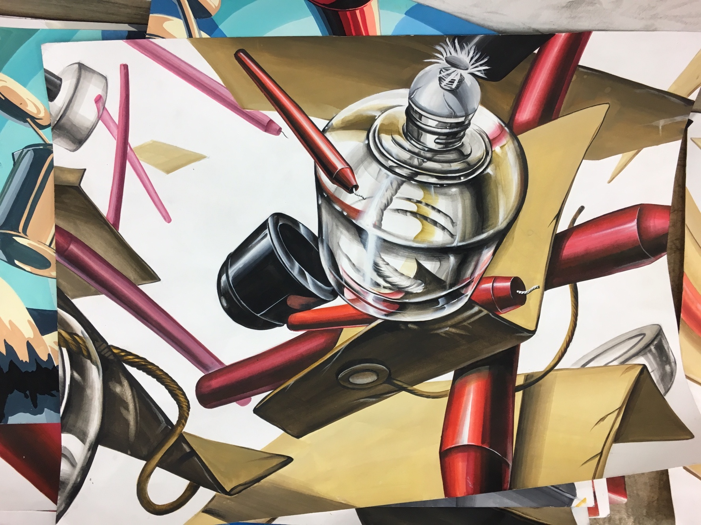
유리재질이 나오면 어김없이 유리가 아닌 쇠를 그리고 있는 우리들을 보고는 강사쌤을 시켜서 시범을 보여주곤 했다.
유리시범만 오천번쯤 본것같은데 사실 아직도 못그리겠다.
볼땐 되게 쉬워보였는데 .. 쩝 ..
구도지옥
학원을 다니는 동안 만만치않은 재료비와 학원비땜에 항상 미안했다. 한다스에 8000원씩하는 연필은 일주일이면 동이 났고 한자루에 5천원씩하던 붓은 자꾸만 벌어져서 새로 사야했다. 문구사에 가면 또 쓰지도 않을 형형색색의 물감들을 사곤했고 쌤은 그런 내 모습을 보면서 이런 물감고를시간 아껴서 구도하나를
더 짜라는 말을 수도없이 하셨다.
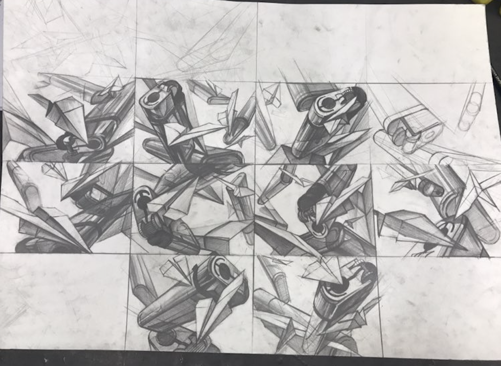
특히나 어려웠던 구도짜기는 입시가 끝날때까지 날 괴롭혔다.
사실 난 다짐한게 있었다. 어른이 되면 절대로 남들 앞에서 울지않겠다고 다짐했지만
주 7일중 4일은 울었다. ‘훌쩍훌쩍’ 아니고 ‘ 엉엉’
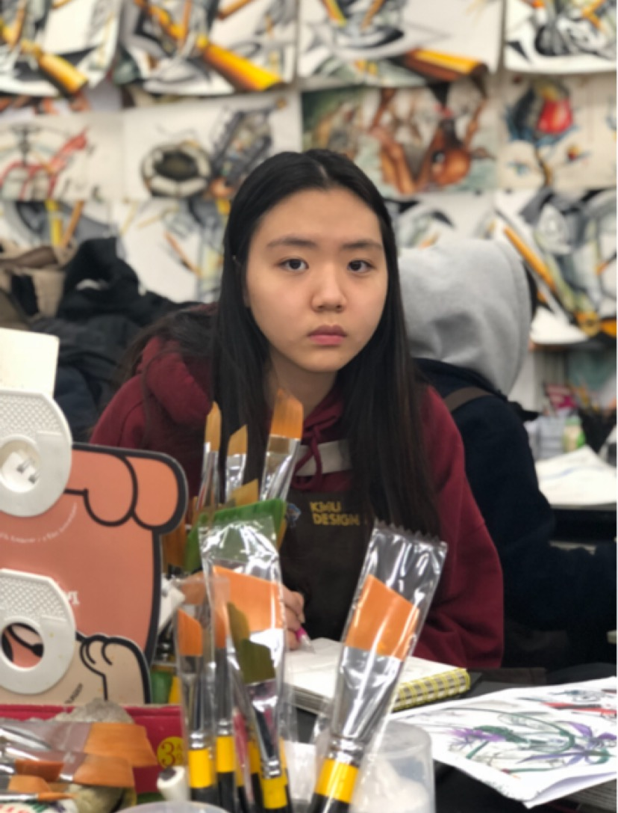
그렇게 울어도 절대 까먹지
않았던 밥시간
매일매일 두달간 반복된 똑같은 생활에 달라지는건 내 몸무게와 밥뿐이었다.
12시부터 1시까지 , 6시부터 7시까지
밥시간이 되면 길거리에 모든 입시생들이 학원 앞치마를
두르고 나와서 급하게 밥을 먹었다.
물론 우리반의 밥시간 명예소방관도 나였다.
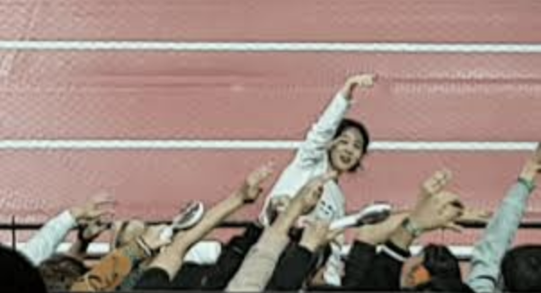
“햄버거 먹을사람!”
“오늘은 국밥먹자..”
“아이..난 국밥 싫은데..”
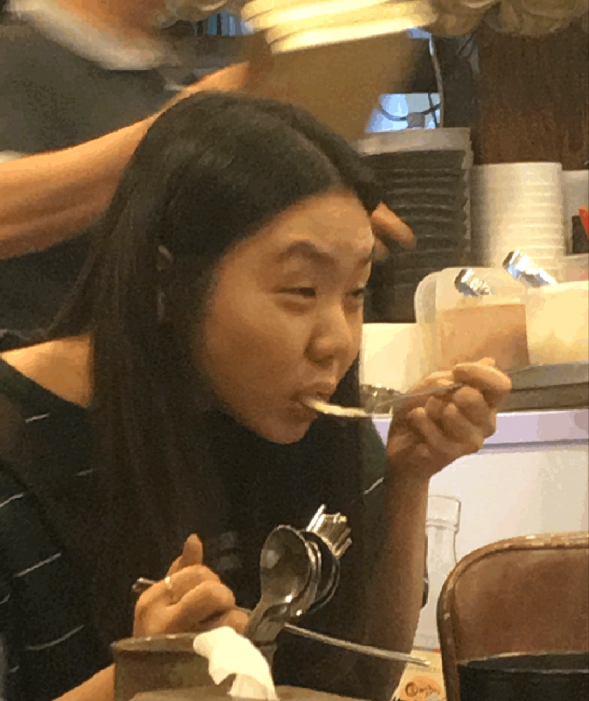
어쩔수없이 너네땜에 먹는거야 진짜루
시험을 보는 5시간중 모든건 마지막 2시간안에 이루어졌다.
기적처럼 무질서속에서 질서를 찾았던 2시간.
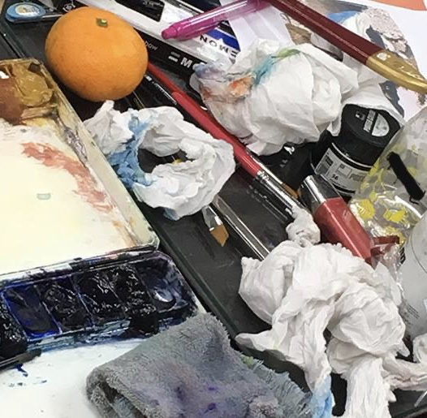
가끔은 스케치를 2시간동안 뜬적도 있었다.
스케치를 30분을 떠도
왜 항상 2시간동안 모든걸 했는지는 의문이다.
뭐… 나만 그랬나?
손에 물감 잔뜩뭍히고 자꾸 여백 건들이지 말란 강사쌤 말도 저질러놓고 화이트로 수습하지말란 말도
시험시간이 되면 아무것도 들리지 않았다.
그저 ‘완성만 하자’였을뿐.
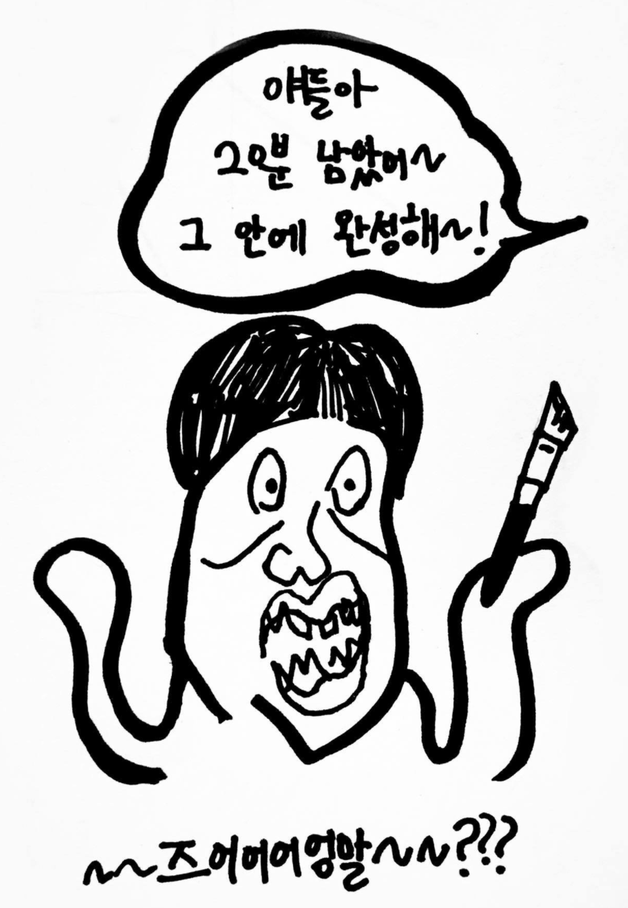
우리들의 ‘그때'

어느때보다 덥고 어느때보다 추웠던 나의 2017년엔 잊지못할 순간들로 가득하다.
넘어져도 나혼자 일어서는 법을 알았고 힘들어 쉬어가는 법도 알았다.
같은길을 달리는 친구들을 일으키는 법도 배웠고 또 나를 일으켜줬던 사람들을
난 아직도 잊지못한다.
2017년의 겨울은 내 기억속에서 없어지지 않았으면,
그들에게도 그 겨울은 평생의 겨울에서 가장 따뜻했던 겨울이었으면,
그렇게 아파했던 겨울이어도 흉터가 아닌 성장통으로 남았던
내 소중한 2017년의 겨울